Phase IV: Resolution With Dave
By this time, Dave and I were like old friends. Or would be. Gone were the days of petty jealousy over our respective careers. Gone were the sandwiches I made the day I wrote my first letter. Gone even were the voices I heard occasionally calling to me to "break into a bank and paste all the money onto the outside of the bank, for a joke." Dave and I were pals.Or would be. Our mutual respect had grown such that neither of us ever felt the need to call the other one a "weasely wimp", or to draw moustaches on newspaper photos of the other one. We had an amicability that transcended all that.
What I now felt for Dave was a sincere desire to help him, to offer some fatherly advice now and then, to chide him once in a while for some bonehead slip he made, to play a joke on him occasionally. In short, I began to think of Dave once again as the guy on TV that I used to yell at and throw wet pasta noodles at until the screen, and thus his face, were a complete mess. Our relationship had come full circle. Or would have.
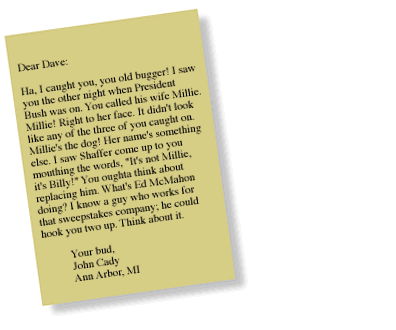
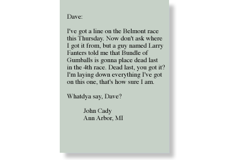
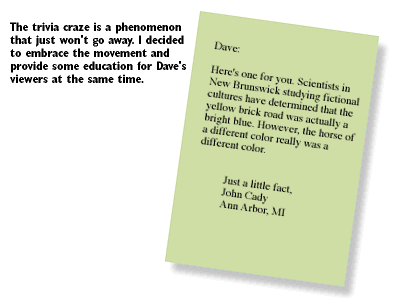
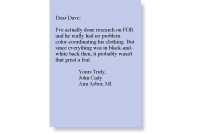
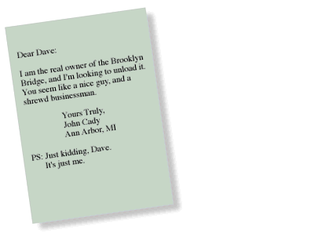
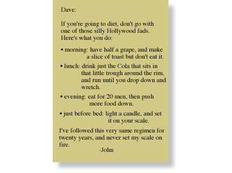
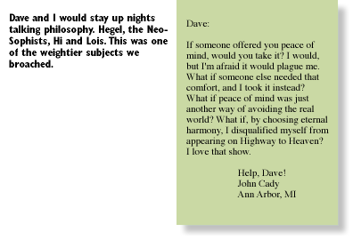
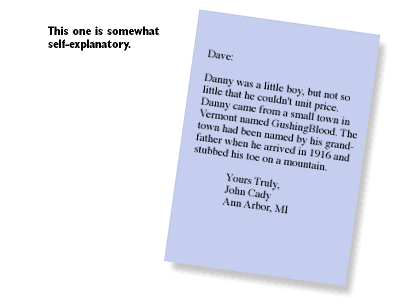
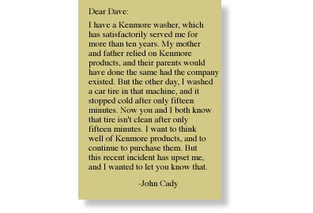
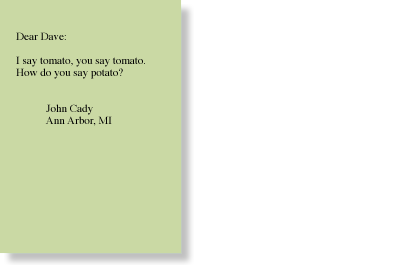
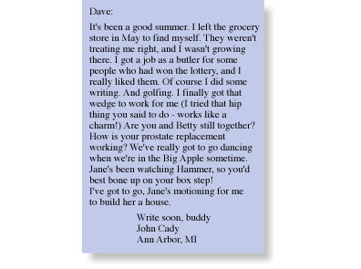
or back to the table of contents
© 1993-1995 John Cady and the Lounge Life Press